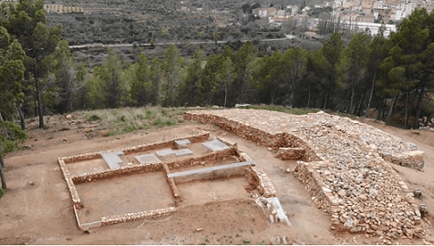
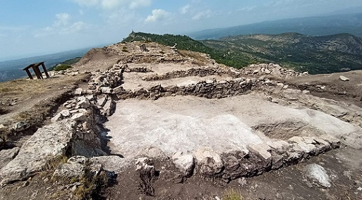
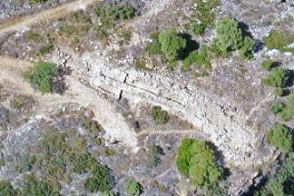
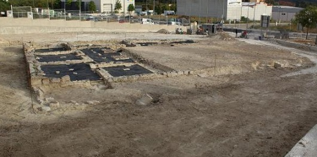

|
V A L E N C I A
|
||||||||||||||||||||||||||||||||||||||||||||||||||||||||||||
|
COMARCA RINCÓN DE ADEMÚZ • ADEMUZ
En Ademuz se conocen restos de poblados
ibéricos en los que han aparecido hallazgos tales como lascas, raspadores,
hachas de piedra y cerámica. Destaca el poblado de La Celadilla de Ademuz;
es una aldea fortificada de época ibérica, de un poco menos de media
hectárea de extensión, habitada entre finales del siglo V y mediados del
siglo IV a.e.c., cuando fue destruida por un gran incendio que supuso su
abandono definitivo y en el cual perecieron algunos de sus habitantes,
cuyos cuerpos encontramos diseminados por sus calles y casas.

El poblamiento de este municipio se
remonta a la civilización ibérica, prueba de ello son el poblado ibérico
de la Villa Vieja (junto a la Iglesia-Fortaleza de Castielfabib) y el
poblado ibérico de la Nava. La necrópolis de la "Morrita de la Nava". Se supone que al período ibérico
le sigue un período romano avalado por el nombre supuestamente romano
derivado de Castrum Fabii y por el hallazgo de diversos paramentos en la
construcción del castillo que datan de época romana. Existen dos
yacimientos iberos sin estudiar. Destacan los restos la calzada romana de
la Losilla de la Puebla de San Miguel a Aras de los Olmos.
• ALPUENTE
En el término municipal existen
numerosos yacimientos arqueológicos, correspondientes a la época ibérica,
a la Edad del Bronce y al Eneolítico. Se conservan restos ibéricos y romanos.
EL castillo del Poyo al parecer es de origen romano.
En el municipio se han hallado restos
desde la época de piedra. De época romana e ibera en su museo municipal se
pueden observar una gran cantidad de restos cerámicos, adornos personales
y monedas. Destacan los
restos la calzada romana de la Losilla de la Puebla de San Miguel a Aras
de los Olmos.
En su término se ha hallado un poblado
ibérico en los Castillejos, posteriormente ocupado por los romanos y han
aparecido gran cantidad de restos cerámicos. Acueducto Romano de Peña Cortada.
• CHELVA
• CHULILLA Por los restos
cerámicos y lápidas encontrados sabemos que se encontraban poblados
durante la dominación romana, aunque también se han localizado vestigios
de un poblado de la Edad del Bronce en la Terrosa y de los Iberos en la
zona de la Loma. De los tiempos de la romanización se conservan un molino
y restos de una villa rústica y cerámicas. Gestalgar ha acondicionado un
tramo de acceso al acueducto romano de los Calicantos y ha realizado una
excavación arqueológica en torno a este durante los meses de septiembre
y octubre de 2017. El arqueólogo Víctor Algarra señaló que el acueducto
datado en el siglo I-II, tiene la peculiaridad de que se encuentra
inacabado en todos sus tramos, por lo que existen túneles que se
iniciaron en sus dos extremos y que no se comunican entre sí por unos
pocos metros. Algarra ha asegurado que estos restos «permiten hacer una
visita de obra tal y como la dejaron los trabajadores romanos hace
diecinueve siglos». En este Término municipal, se encuentra uno de los yacimientos más importantes del Bronce Valenciano: la Ayatuela. En el se hallaron entre otros una alabarda, un puñal, un puñalito y restos de varias puntas de flecha y abundantes fragmentos cerámicos. • PEDRALBA
Poblada desde el periodo mesolítico. De
época ibérica el poblado más importante es el de Punta de las Aliagas,
situado enfrente del Pico del Águila, entorno al cual se asentaban otros
de menor importancia como el poblado del Castillejo del Pozuelo, la
partida de La Salida o el Mojón Alto. De época romana destacan los
emplazamientos de La Cañada Larca - Mazcán - Cerrito Royo, donde se
encontraba una importante villa a juzgar por la cantidad de hallazgos
arqueológicos. Según la leyenda tradicional, la alquería romana del Hortet
dio lugar al nacimiento de la actual Pedralba.
Parece que este municipio tuvo asentamientos romanos, ya que se han encontrado monedas y vasijas en el paraje conocido por Los Casericios, además de un acueducto en las cercanías de la población.
• TITAGUAS
• YESA, LA
COMARCA CAMP DE TURIA • BENAGUASIL Antiguo asentamiento ibero edetano. De época romana se han hallado monedas, restos cerámicos, restos de un canal tallado en la roca, lapidas y villas en la zona urbana actual, en la partida del Charril, L’Olivereta, l’Alteró, l Ballestar, el Pla de la Barca, la Caiguda, Montiel, etc. • BÉTERA Bétera estaba poblada desde época ibérica. El yacimiento romano de l´Horta
Vella, data del siglo I-II.
Fue descubierta en 1998 en unos trabajos arqueológicos promovidos
por la Dirección General de Patrimonio Cultural Valenciano. La villa
se ocupó a lo largo de los siglos, hasta el siglo VI. Su estado de
conservación es bueno, el yacimiento todavía conserva muros de una
altura de 4,5 metros. La ubicación de la villa está relacionada con
el antiguo camino que unía Sagumtum con Edeta.....
• CASINOS Destaca el poblado íbero-romano de la Torre Seca, de comienzos del siglo IV a.e.c hasta las guerras Sertorianas. De época romana se han hallado monedas, ánforas republicanas y restos cerámicos. Más restos iberos se han hallado en el cerro del Corral de Pomer, en la cima del Castellar, en el Pla y en la Seña. De época romana son los restos de El Borreguillo y la Cañá del Flare. • YÁTOVA Los primeros vestigios de la existencia de Yátova se remontan al Paleolítico Superior. De la Edad de Hierro encontramos poblados en el pico de los Ajos y en la Sierra Martés. También se ha datado en época ibérica la torre o "castillo" de Torrejón. En 2015 se han realizado unas obras arqueológicas que tiene como objetivo la restauración de la Torre Sur del yacimiento. Otros restos de asentamientos de época ibérica según los arqueólogos son los yacimientos de "La Mina" y "Puntalicos Blancos". Destaca el yacimiento del Pico de los Ajos, uno de los yacimientos ibéricos más importantes de la Península. Este yacimiento posee uno de los mayores conjuntos de textos escritos en ibérico de toda la península ibérica". El poblado estuvo habitado al menos desde el siglo VII a.e.c. y fue abandonado posteriormente entre los siglos I a.e.c. y I. De época romana se han hallado restos cerámicos. Foto: www.museuprehistoriavalencia.es

El origen de éste municipio, data sin duda alguna de época Latina, como se desprende de su primitivo nombre MARNA, que procede del latín, MARGA queriendo decir, tierra calcárea y arcillosa. • NÁQUERA
Los orígenes de Nàquera se remontan a la prehistoria. Los hallazgos más
antiguos datan de la época paleolítica. En el bronce encontramos
diferentes yacimientos. Entre los diferentes yacimientos conservados,
destacan el Yacimientos dels Trencalls, el del Cerro de la Patada, el del
Montaspre, o el del Puntal del Moros. No se han encontrado yacimientos de
origen ibérico. En época romana encontramos nuevos yacimientos destacando
el ubicado en la actual zona de Viñes. De esta época se han encontrado
diversos vestigios en el núcleo urbano que podrían avalar la teoría de que
el núcleo de población actual surge ya en época romana.
• RIBA-ROJA DE TÚRIA
Poblado desde la prehistoria. De época íbera tenemos constancia de tres poblados, el de Alcalà, el de Ría y el de Portaceli. Además se han citado otros restos probablemente coetáneos, como los del Sierro. De época romana es el asentamiento de Ría, ya poblado por los íberos. • VILAMARXANT Antiguo poblado ibero. De la romanización son los restos de una villa rústica, en la partida de la Villalba. Los restos romanos de más categoría hallados en los contornos de Villamarchante: En 1872 se encontró una lápida haciendo los preparativos para la plantación de una viña, depositada en el Museo Provincial. Existen restos de conducciones romanas que regaban los términos de Villamarchante. El acueducto de Villamarchante, todavía se puede contemplar en las afueras del pueblo.
• ALBALAT DELS TARONGERS Poblado desde la antigüedad, la Cova de l'Aigua Amarga, iberos romanos, visigodos,... El origen del Castell-Palau se asocia con los restos hallados de una villa hispanorromana. En la escalera de la casa hay una lápida con una inscripción en latín que dice así: "Al piadosísimo hermano Festo, de veintidós dos años, Justino". Según los historiadores también de época romana es es la puerta, que se encuentra a unos tres metros debajo de la plaza de la Mare de Déu. • ALFARA DE ALGIMIA
En su termino se han hallado restos
cerámicos de época ibera y lápidas romanas con inscripciones. En su termino han aparecido restos iberos y lapidas romanas con inscripciones latinas. • BENAVITES Se han hallado tres lápidas con inscripción latina. • ESTIVELLA Poblado desde la prehistoria. Se han hallado restos de las épocas ibérica y romana como lo demuestran los vestigios de Sabató y el acueducto de els Arcs. • GILET
En Gilet existen los restos de un
poblado ibérico hallados en la montaña denominada La Peña, donde se
hallaron fragmentos cerámicos y otros que irían desde la Edad de Bronce
hasta la Época Medieval. En Santo Espíritu se encontró una cueva con una
pintura rupestre en color rojo pálido. En la Font de la Vidriera, también
se hallaron restos de un poblado ibérico romanizado que se ha fechado
entre los siglos III y II a.e.c. Poblado desde la Edad del Bronce valenciano.
• SAGUNT
En el municipio se han hallado restos
de asentamientos íberos y romanos. En el lecho del río Palancia se
conservan las ruinas de un puente romano. COMARCA REQUENA-UTIEL • FUENTERROBLES
En el municipio se hallaron varias
piezas de orfebrería ibero-romana, entre las que destaca una fíbula de
plata con representaciones de caza. • SINARCAS En el municipio se han
constatado asentamientos desde el Neolítico. También son
importantes los hallazgos de restos arqueológicos de época romana.
• VENTA DEL MORO COMARCA LA HOYA DE BUÑOL-CHIVA
• ALBORACHE Los primeros vestigios de
asentamientos en Buñol se remontan unos 50.000 años. Se han encontrado yacimientos prehistóricos en el barranco de Carcalín en
la Cueva Turche y en la Covalta de Ventamina. • CHESTE Con la construcción del
Circuito se descubrieron dos villas romanas; una de ellas se excavó y sus restos, entre ellos una
lápida romana, se depositaron en la Sede del Instituto de Estudios Comarcales de Buñol, mientras que la otra villa romana se dejó tal y como estaba
en el lugar donde se halló por no tener la suficiente entidad o valor histórico
según los arqueólogos y por ser agredida por el cultivo; actualmente se sabe en
que parte del circuito se localiza enterrada. En una de las curvas se planto un olivo, de
manera que bajo ese olivo al lado de la curva se encuentra la villa romana.
También destacan los yacimientos del Mojón y del Castillarejo Poblada desde la Edad de los Metales. El Castillo de Chiva se edificó sobre restos romanos. De época romana destaca la villa de la partida de Incolla. • GODELLETA Se localizaron restos que avalan la existencia de una villa romana en la Masía de los Escolapios. • MACASTRE Se han hallado varias monedas de época romana.
• SIETE AGUAS Poblada desde la Edad de Hierro, encontramos poblados en el pico de los Ajos. En dicho poblado se han hallado escritos realizados en placas de plomo. De época romana se han encontrado restos cerámicos.
• ALBORAYA Posible puerto fenicio en el barranco del Carraixet. En las playas de Alboraia y de La Malvarrosa se ha localizado ánforas que van época fenicia, griega, púnica, ibérica, etrusca y romana. Otros autores, además, han intentado demostrar que el Carraixet era una vía fluvial remontable hasta Bétera o Montcada, para comerciar con los íberos del Tos Pelat u otros poblados. Lo que queda claro es que la red formada por la Vía Augusta (oeste), el fondeadero (este), las centurias (norte) y el cementerio (sur). En el camino de Valencia hace unos años se encontró un busto romano de época adriana. Actualmente está en el Museo Arqueológico Nacional. En su término se han encontrado restos de villas romanas de época imperial.
• ALBUIXECH
Por los restos hallados en este
municipio existían pobladores desde el periodo Neolítico. Todo parece
indicar que es en época romana cuando se construyen los primeros regadíos
de la huerta.
El este municipio se halló en una
cantera inmediata a la localidad un buen número de cuentas de collar
discoidales, de concha, pertenecientes a la cultura eneolítica, o a la del
Bronce Valenciano. En el municipio de Godella se localizaron restos que avalan la existencia en la zona de una villa romana. También destaca la cantera conocida como "Les Pedreres", cuyos orígenes se remontan a la época romana. De esta cantera se extrajo la piedra para la Lonja y la Catedral de Valencia.
En marzo de 2024, La Generalitat pide
conservar los restos romanos hallados en PAI del paraje de la Cañada de
Trilles y que se haga un seguimiento arqueológico. Se han hallado restos de la Edad del Bronce en la Lloma dels Germanells. De época romana se han hallado restos en la Lloma de Maimona. • MONCADA En este municipio se hallado restos de dos villa romanas. Les Paretetes dels Moros y El Pouatxo, famosa por ser el lugar donde en 1920 se descubrió el mosaico de Les Nou Muses que representa a las nueve hermanas de Apolo con sus respectivos atributos. Los indicios apuntan que las villas estuvieron habitadas entre los siglos I y IV.
De época ibera destaca el yacimiento de Tos Pelat
del siglo V a.e.c. Situado estratégicamente, fue descubierto en 1920.
El camino ibérico dels Fornets, en funcionamiento hasta la actualidad, se orienta NO-SE y muy probablemente comunicaba la costa del golfo de València con la Vía Heraclea en las proximidades de Bétera quedando el yacimiento ibérico del Tòs Pelat en su trazado. todavía podemos ver diferentes tramos de roderas más o menos largos y en algún caso muy bien conservadas al quedar paralelas al actual camino y fuera de uso. En agosto de 2024, La
ampliación del polígono III de Moncada destapa una villa romana de más
de 20.000 metros cuadrados • PUÇOL
Los orígenes de la población se remontan a la época romana, en el siglo II
a.e.c. los romanos se instalan en el Trull del Moro y llaman al lugar
Puteus (pozo) por la enorme cantidad de agua que encuentran en la zona.
Por este municipio discurría la "Vía Augusta". Los primeros indicios históricos se remontan a la época ibérica, de época romana se conserva una pilastra funeraria en el Monasterio de Santa María del Puig.
• RAFELBUNYOL COMARCA L'HORTA OEST • ALAQUÀS La localidad posee monumentos romanos, la Cisterna y la cimentación del castillo. También se hallaron monedas de época imperial y lápidas conmemorativas. • ALADAIA Hay numerosos vestigios de época romana, como lo atestiguan los restos encontrados en la Ereta dels Moros, La Punja y Les Bases. Los yacimientos prácticamente están destruidos por los usos industriales y agrícolas. La Ereta dels Moros se identifica con una villa romana, aquí fue donde se halló el Baco de Aldaia, actualmente expuesto en el Museo Arqueológico Nacional. • MANISES
• PATERNA La denominación de Paterna es de procedencia latina, "paternus", perteneciente al padre. En el término municipal de Paterna se han encontrado restos arqueológicos del Neolítico y Edad del Bronce, (Lloma de Betxi), donde posteriormente se asentaron los poblados íberos de Despeñaperros y La Vallesa.
Más info de la agresión a la villa y localización restos romanos: https://www.villa-romana-paterna.com/
• QUART DE POBLET
De época romana se han hallado los restos del puente romano y del
Aqüeducte dels Arquets. En 2025 las obras de remodelación que el
Ayuntamiento de Quart de Poblet lleva a cabo en la Plaza de la Iglesia y
la Cisterna han sacado a la luz restos arqueológicos de estructuras de
viviendas, monedas y cerámicas fechadas entre los siglos III a.e.c. y IV
en el marco de la reurbanización. • TORRENT
Poblado desde la Edad de Bronce. Hay restos de poblamientos ibéricos en la
Llometa del Clot de Bailón. Próximo al acueducto medieval de Els Arquets,
se han hallado vestigios de época romana.
En enero de 2014 se hallaron restos de muros y pavimentos datados
entre los siglos I y IV. En enero de 2015 se han recuperado los restos de
una estructura productiva de época imperial romana, posiblemente
dedicada a la producción de aceite o vino, en la zona del Alter. Se han
hallado restos de pavimento hidráulico y de muros romanos, así como dos
dolias de época imperial. Durante las excavaciones se han encontrado
también fragmentos de ánforas, tejas y una moneda de época imperial que
ha ayudado a datar el yacimiento. Estos vestigios de la época romana se
unen a los encontrados en otros puntos como en el Mas del Jutge o el
Barranc de L´Horteta. Hasta hace algunos años, todavía se conservaban restos de época romana en algunos paredones derruidos en la calle San Joaquín, restos de canalizaciones de aguas, así como restos de calzada romana, hoy desaparecidas bajo el hormigón durante la construcción del Polígono Industrial. También fue derruida la Alquería de Castillo, que conservaba numerosos elementos romanos. Hoy sólo se conservan algunas bases de columnas de esta construcción en el Polideportivo Municipal.
COMARCA L'HORTA SUD
• CATARROJA Se han hallado restos del Bronce valenciano en el Molló de l'Almud y Avenc de l'Àguila; y de época romana en el Mas dels Foressos.
• SILLA
COMARCA EL VALLE DE AYORA • AYORA
• COFRENTES
El
municipio fue testigo, de las batallas entre dos generales y políticos
romanos, Pompeyo y Sertorio, por lo que se
supone que el castillo existía en aquélla época, ya que en él se han encontrado
restos romanos.
Tras las excavaciones realizadas en el Castillo de Cofrentes, se encontraron
monedas que indican que el pueblo es de origen romano, al que según dice
Escolano en su "Historia del Reino de Valencia" dieron nombre de Confluentin,
sin duda por estar anclado en la confluencia de los ríos Jucar y Cabriel. • TERESA DE COFRENTES De época romana son
los cimientos del antiguo castillo de Teresa. COMARCA LA CANAL DE NAVARRES • ANNA Poblada desde el Paleolítico Superior. De época romana destacan los restos de una villa en la Moleta y otra en la Casa Guillén; en el Altico de la Hoyeta se excavó una necrópolis de inhumación, mientras que en el Cantalobos los restos correspondían a época tardorromana. • BICORP Destacan las pinturas rupestres de la Cova de la araña y del Barranco Moreno.
• ENGUERA • NAVARRÉS De época romana encontramos una villa localizada en Los Pedregales y la tumba de época tardía localizada en los nuevos almacenes de la cooperativa.
• ALBERIC La población conserva restos de la Edad del Bronce y elementos romanos del siglo II a.e.c. • ALFARP El castillo es de origen romano, donde se han encontrado algunas lápidas con inscripciones latinas.
• ALGEMESÍ • ALZIRA El término municipal alzireño estuvo poblado desde la Prehistoria. Se han hallado restos en la Cova de les Meravelles, de la Cova de les Aranyes y dels Gats. De época ibera son los poblados de la Muntanya Assolada y de les Cases de Moncada. Del periodo romano es la necrópolis del Camí d'Albalat. En sus alrededores se han encontrado miliarios de la Vía augusta que pasaba por esta población. Se la identifica con la ciudad Romana de Sucro. En marzo de 2012, las obras de ampliación de la subestación eléctrica de Alzira han localizado una necrópolis que, en una primera hipótesis, los arqueólogos datan a finales de la época romana (siglos IV o V) y se relaciona con una villa rústica.
• BENIFAIÓ
• CARCAIXENT
• CARLET Los hallazgos en el término de Llombai confirman la presencia humana desde la prehistoria. De la época romana hay referencia de una lápida hallada a la Foia, colocada muchos años al muro del molino del convento dominico, con la inscripción: “FONTEIO PIO LATICLVI”
• MONSERRAT
• POBLA LLARGA, LA • SUMACÀRCER Poblado desde el Paleolítico Superior. A los pies del castillo se han hallado restos íberos y un poblado de la edad del Bronce. Restos romanos se han hallado en la partida del Teular. • TOUS Se han encontrado cerámicas de bronce valenciano mezcladas con restos humanos y vestigios (vasos y cerámica). De época romana se han hallado ánforas, denarios de plata y ases de bronce datados entre el 135 y el 161. • TURÍS Se han hallado restos de poblamiento desde la Edad del bronce. Destaca sobre todo La excavación en La Carència donde se supone que se halla la ciudad ibero romana conocida como "Kili/Gili". El yacimiento tiene una extensión de 8,5 hectáreas, en continuidad de ocupación desde el Bronce Final (IV a.e.c.), pasando por las épocas ibérica, romana republicana y romana imperial, hasta alcanzar el siglo III. En agosto de 2011 se ha descubierto 52 metros de muralla ibérica y una torre. En julio de 2013, el equipo de arqueólogos del Área de Cultura de la Diputación de Valencia ha hallado restos cerámicos en el poblado íbero-romano de La Carència de Turís que confirman la datación de los conjuntos de murallas y torres defensivas y sitúan su formación en el siglo I a.e.c, en plena guerra sertoriana.

• VILLANUEVA DE CASTELLÓN De época romana se conservan los restos arqueológicos pertenecientes a un taller alfarero, siglos I y II. El yacimiento fue descubierto con motivo de la construcción de la nueva estación de ferrocarril de Villanueva de Castellón y excavado en el año 1989. La excavación permitió documentar parte de tres hornos de cocción de cerámica, una balsa de decantación de arcilla y dos fosas vertedero con abundantes fragmentos de cerámica.
COMARCA LA RIBERA BAIXA • ALBALAT DE LA RIBERA En otoño de 2020, Los arqueólogos sitúan en Albalat de la Ribera una ciudad de origen íbero. Datan el yacimiento en el siglo V a.e.c., barajan que el asentamiento puede ser el eslabón que unía la costa con el interior y el origen de la Sucro romana. Han aparecido estructuras y fragmentos cerámicos. • CORBERA Los orígenes de Corbera debemos buscarlos en la época romana, su castillo musulmán fue construido sobre cimientos romanos. • CULLERA La Punta de I'Illa en Cullera, fue excavada en los años
1955, 1957 y 1966. Se documentaron una serie de muros, un edificio de
carácter religioso y tres departamentos destinados a almacén. La
interpretación
de los textos antiguos, junto con la cronología y el carácter religioso de
los materiales hallados en el edificio permiten señalar que este
lugar fue donde el obispo Justiniano ordenó construir un monasterio en memoria
de la llegada del cuerpo de San Vicente Mártir. Entre los materiales de la
Punta de l'Illa destacan las ánforas, recipientes que contenían aceite y vino. El yacimiento se abandonó hacia mediados
del siglo VI o poco después. Otros restos romanos confirman que Cullera
fue el puerto de la vecina ciudad de Sucro (Alzira), llamándose Portus
Sucronensis. En el termino municipal de Polinyà han aparecido vestigios de época neolítica en la Sima de la Pedrea, y de época romana en el Altet de Cocasanta y la partida del Gual. • SOLLANA En el Pla Ballester se han hallado restos de la edad del Bronce. De época romana son los restos de la villa en la partida de la Travessa, que pertenecían a un tal Sulius. Se hallaron restos de edificaciones, mosaicos, cerámicos y unas cincuenta monedas de diversos emperadores.
COMARCA LA COSTERA • CERDÀ Se hallaron los restos de una posible necrópolis romana cuyos restos, poco característicos, aparecieron en el Torrent de Fenollet. • ESTUBENY Los datos más antiguos que se conocen sobre la ocupación humana del territorio de Estubeny datan del Mesolítico. Se han hallado yacimientos de época romana en el Pla dels Olivars y junto al Puntal del Barranc de les Coves quedan restos de una antigua villa rústica que han proporcionado abundante cerámica sigillata. • FONT DE LA FIGUERA, LA Poblada desde el
Paleolítico Superior. Destaca el yacimiento de la Mola de Torró, donde se
han hallado cerámicas áticas de barniz negro e ibéricas con decoración
geométrica pintada, semejantes a las de la Bastida de les Alcuses.
De la Edad del Bronce destaca el yacimiento del l´Altet
del Palau. Hay abundantes restos de la romanización, muchos mezclados con otros ibéricos,
como los de Canyars y Casa Ferrero, destacando las villas de Cascallars y
el Camí Fondo, donde también se ha localizado una necrópolis. Se cree que
en este emplazamiento se hallaba la mansio romana de Ad Turres. En el término de Llanera se ha hallado un poblado del Bronce Valenciano. En el Alts de la Llacuna, se descubrieron los restos de un poblado ibérico, en el que se encontró parte de un vaso de cerámica rústica del tipo llamado arcaizante y varios fragmentos de un plato decorado con motivos geométricos. • MOIXENT
• MONTESA Hay vestigios de un asentamiento ibérico a los pies del castillo y en la partida de la Cañada. Consiste en abundantes fragmentos de cerámica, con una decoración geométrica pintada, y una pequeña escultura de fango, representando un caballo. De la época romana también hay restos de una necrópolis a los pies del castillo. En 1979 en el transcurso de unas obras de la casa de Enrique Castelló en la C/Mig, se hallaron una lápida funeraria, restos de columnas y capiteles. • VALLADA Son varios los materiales que se conservan desde el paleolítico. En el año 1987 se descubrieron restos constructivos, cerámicos y líneas de muros, que indicaban la existencia de un asentamiento romano en la población.
COMARCA LA SAFOR • ADOR Poblado desde el Eneolítico. De época romana se hallaron restos en la partida Raconch, al plano de I'Alfas. Además de gran cantidad de objetos, se constató la existencia de una mansión con un sistema de calefacción muy especial para su época. • ALFAUIR Han aparecido restos cerámicos de época ibérica. De época romana son los vestigios de una probable villa romana adosada al Camino Real de Xàtiva. • BENIARJÓ
• DAIMÚS El poblamiento romano debió iniciarse en el siglo I, como parece indicar el hallazgo de un denario de plata de la familia Acilia, del año 54 a.e.c, junto con un as de bronce de Domiciano del año 82. Se conservan algunos restos de la época romana como el yacimiento del Hort del Comte y el sepulcro de Baebiae Quietae, verdaderos tesoros. En el caso del sepulcro, se trataba de un terreno citrícola en cuya superficie se encontraron restos romanos. Algunas hipótesis apuntan que era la ciudad de Artemision. En el año 1506 aparecieron bajo una piedra cabezas de mármol, una de hombre y otra de mujer, además de dos lápidas romanas, una de ellas en una torre antigua y la otra en un sepulcro con forma de torre. • FONT D'EN CARRÒS, LA Se han hallado restos que dan testimonio que desde la edad del bronce los humanos ocupaban el solar del castillo de Rebollet y la montaña del Rabat. En época romana existió una villa romana, localizada a la partida de les Jovades, y otra alrededor de la ermita de San Miguel. Los trabajos llevados a cabo a lo largo de 2009 y 2010 han permitido descubrir tres nuevos yacimientos arqueológicos de la época del bronce y romana. • GANDIA Poblada desde el Paleolítico. Esta comprobada la ocupación del cerro del Castell de Sant Joan en la época ibérica. De época romana en la ciudad de Gandia se han encontrado monedas y lápidas que podrían indicar un asentamiento; y otros restos romanos en las cuevas Penjada, Meravelles y dels Porcs. En junio de 2016, las excavaciones en un solar de Sanxo Llop han sacado a la luz restos de un poblado de 4.500 años. Hay piezas desde el comienzo del calcolítico del tercer milenio hasta el siglo XII después de Cristo. La población se dedicó durante siglos a la agricultura, ganadería y metalurgia del cobre. Los arqueólogos hallan cinco enterramientos romanos, 80 silos, puntas de flecha y restos de cerámica. • OLIVA Oliva ha estado poblada desde la prehistoria. De época romana destaca su horno del siglo I. Conserva en buen estado la cámara de combustión, el piso de cocción y la estructura que lo envolvía. Era utilizado para la fabricación de ánforas.
• POTRÍES Los vestigios arqueológicos atestiguan la presencia de comunidades humanas desde el Neolítico y la Edad del Bronce. Restos de cabañas, útiles de piedra o cerámicas hechas a mano, forman parte de los hallazgos en el yacimiento de la montaña de Penyascals, además de una necrópolis en la partida de la Casa Fosca-Alameda. El asentamiento continuó durante la época Ibérica, desapareciendo después de la colonización romana. De época romana se conserva la villa romana de la Campina-Catorzena, con unas dimensiones considerables; disponía de espacios residenciales, de explotación y transformación agrícolas y de un complejo artesanal para la fabricación de objetos cerámicos. Hoy por hoy, la villa romana no es visitable. Sus restos, muy arrasados por la continua explotación agrícola del territorio. • RAFELCOFER Se han hallado
restos de época ibera y romana.
Las
casas romanas datan del siglo II al I a.e.c. y fueron excavadas en 1980. En Rotova, en el polígono industrial, se descubrió un yacimiento de época Neolítica. Destaca la villa romana del siglo I, que se descubrió y excavó en 2006 y 2007, con la construcción de la autovía y una nave industrial. Se abandonó y soterró. De la villa romana de la Sort, se descubrió la trama urbana, un horno cerámico y un complejo termal. Se cree que los edificios de época romana llegaban hasta la Iglesia. En la calle Ave Mª apareció una inscripción sepulcral (“Lucius Baebius Trupo hic situs est”) del siglo I, y en la cantonada del Palau aparecieron restos cerámicos de los siglos II-IV. En el castillo de Borró se observan restos que se corresponden con un yacimiento ibérico de los siglos IV-V a.e.c y de época romana siglos III-IV.
En las excavaciones de diciembre de 2019, se saca a la luz 500 fragmentos de piezas procedentes de puertos franceses e italianos y la base de una columna. El Consell autoriza una ampliación de plazo de los trabajos para hacer visitable el recinto. Las excavaciones de la villa romana de La Sort han sacado a la luz parte del perímetro de la vivienda agrícola. Foto www.lasprovincias.es

• TAVERNES DE LA VALLDIGNA La historia de Tavernes se remonta a los orígenes del hombre, los restos arqueológicos humanos más antiguos de la Comunidad Valenciana encontrados en la Cova Bolomor que datan del paleolítico con unos 130.000 años de antigüedad. El elementos más importantes del yacimiento es el hallazgo de un molar humano de 130.000 años de antigüedad. • VILLALONGA Tenemos noticias de asentamientos humanos ya desde el Neolítico en la "Cova del Pastor" y la "Cova del Racó del Duc", además de restos de la romanización. • XERACO Los primeros vestigios humanos del término de Xeraco pertenecen, al Paleolítico Inferior. Se supone la existencia de un poblado de la Edad del Bronce, en la montaña de la Barcella, del que supuestamente quedan muros de habitaciones muy mal conservados y fragmentos de cerámica lisa, algunos sílex y restos de molinos barquiformes de piedra.
COMARCA LA VALL D'ALBAIDA • AGULLENT El municipio era habitado desde el Neolítico. En los alrededores del pueblo se han hallado restos de cerámica iberos y una moneda romana del Emperador Domiciano. • AIELO DE MALFERIT Se han hallado vestigios de la Cultura del Bronce en el Molló de les Mentires y la Cova de Canet, también se han hallado construcciones iberas. • ALBAIDA Se han hallado restos de época romana al yacimiento de la Covalta, y en el Castell Vell. • ATZENETA D'ALBAIDA A l’Altet del Camí de Bèlgida, se hallaron los restos de un poblado íbero abandonado en época romana. Los romanos establecieron una villa donde ahora se localiza el polígono industrial. • BÈLGIDA En su término se han encontrado abundantes yacimientos desde época prehistórica y también de la cultura ibérica y romana. Poblada desde la antigüedad. Se
han encontrados restos de asentamientos humanos del Neolítico en la Cueva
del Vinalopó y de la Sarsa, así como diversos poblados iberos ubicados en
pequeñas lomas de la zona. De época ibera destaca el llamado León de
Bocairent y el yacimiento del Alt de Castellar con su “calzada”
ibero-romana excavada en la roca, que forma parte de la actual Ruta
Mágica.
En julio de 2013, una excavación realizada por arqueólogos y estudiantes de la Universidad de Alicante (UA) y el Museo Arqueológico de Alcoy confirma la existencia un antiguo poblado en la cima del Cabeçó de Mariola, entre los términos de Alfafara y Bocairent. Los resultados preliminares corroboran la existencia de este enclave fortificado que, al parecer, estuvo habitado desde el siglo IX al I a.e.c. • CASTELLÓ DE RUGAT Los primeros vestigios de población se ha hallado en les coves de Llopis i del Pany, datados en el Neolítico. Vestigios del Bronce Valenciano son los poblados hallados en la Buitrera, l'Algebassó y la Penya Blanca. De época romana destaca el hallazgo de una villa romana, a la partida de l'Ofra y los hallazgos del Lauro, del Xarxet, Marxillent, Camí Llutxent, Alt de la Perdiu donde se halla un horno de cerámica circular. También se encontró una moneda del Emperador Constantino. etc. • OLLERIA, L' Poblada desde el Paleolítico
Superior. En la ermita de San Cristóbal se encontró una lápida romana que
actualmente se puede admirar en una fachada de la calle del Batle. Se han
hallado varias villas romanas en el término, destacando la encontrada
durante las obras de la autovía central, en la partida de Bonavista, donde
aparecieron importantes restos relacionados con una alfarería, la
producción de aceite y un hipocausto. La ocupación humana de su
territorio está documentada desde la época prehistórica. La cueva la Hedra,
en el arenal de la Costa, así como numerosos poblados de la Edad del
Bronce, entre los cuales destaca el Cabeço de Navarro. También hay
documentados otros restos ibéricos, como por ejemplo las del teular de
Mollà, donde ahora se encuentra el polideportivo municipal. • SALEM Hay constancia de dos enterramientos eneolíticos a las cuevas del Frontó y de l'Almud,; pinturas rupestres de arte esquemático al barranco de las Cuevas, y un yacimiento tardo-romano a la Sima.
|